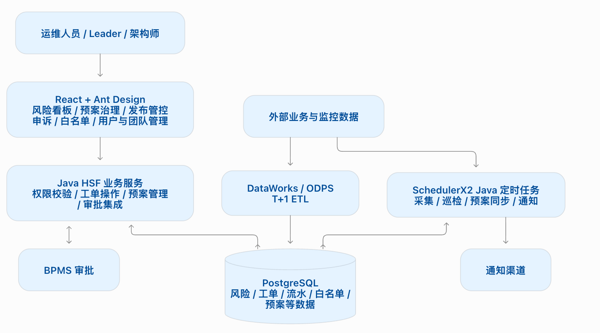

淘宝闪购治理平台
# 治理平台
一句话：把散落在 Excel、群聊和人工催办里的稳定性治理事项，变成一条可追踪、可证明、可升级的治理闭环。
# 一、一句话定位
运维治理平台是一套面向 架构师和业务研发的稳定性治理系统，把风险、预案、发布、申诉、白名单、组织和权限这些原本散落各处的治理事项，变成：
自动发现 -> 工单化 -> 状态机流转 -> 审批/豁免 -> 自证验收 -> 通知升级 -> 数据看板
它不是一个单纯的管理后台，而是把"运维治理动作"产品化。
# 二、为什么做
# 2.1 业务背景
- 外卖大战带动流量翻倍，稳定性风险来源增多；
- 高峰期依赖研发人工值守和盯盘；
- 风险和治理事项长期依赖 Excel 人工记录；
- 记录能写，但难跟踪、难升级、难证明真的关闭；
- 发布违规、预案失效、风险误报等场景缺少统一入口；
- 不同团队、不同角色的权限和归属关系复杂。
# 2.2 核心矛盾
不是"缺一个页面"，而是：
风险发现之后，谁来接、什么时候处理、怎么证明处理完成、处理不了如何升级、误报如何豁免、违规发布如何申诉。
平台要解决的是治理责任链，而不是单点工具。
# 2.3 项目目标
- 风险从人工记录变成线上工单；
- 风险状态可控、可转交、可验收、可升级；
- 发布违规可识别、可申诉、可自动豁免；
- 预案从"有文件"变成"可执行、定期保鲜"；
- 组织和权限与治理责任绑定；
- 逐步引入 AIOps，提前发现风险和替代人工盯盘。
# 三、产品能力：六大治理域
前端有七个模块页面，但产品能力归纳为六个治理域。页面是入口，治理域才是能力边界。
| 治理域 | 用户问题 | 产品能力 |
|---|---|---|
| 风险治理 | 风险散、无人接、无法证明关闭 | 风险单、状态机、转交、验收、通知、升级、T+2 自证 |
| 发布管控 | 违规发布不可见、无法解释 | 应用发布和配置发布分析，识别破窗、破峰、破线、回滚、取消发布 |
| 申诉与豁免 | 违规有合理原因，不能一刀切 | BPMS 申诉、白名单、封网破窗自动豁免 |
| 预案治理 | 预案多、失效多、故障时不敢执行 | ePlan 纳管、打标、超期计算、保鲜、归属定位、一练全练 |
| 组织与权限 | 谁是负责人、谁有权操作 | 团队成员、角色、模块权限、JWT、成员表鉴权 |
| AIOps | 人工盯盘成本高、隐患发现晚 | 峰值 QPS 预测、限流配置校验、智能盯盘 |
# 3.1 风险治理：状态机 + T+2 自证闭环
风险单是平台投入最多、最能体现治理闭环的模块。关键能力：风险类型接入、风险单生成、状态流转、转交、验收、权限校验、通知、升级、历史留痕。
风险状态机有 7 个状态：
pending 待处理
processing 处理中
resolved 已声明解决
closed_success 巡检确认关闭
closed_filtered 过滤关闭
ignored 忽略
reopened 重新打开
2
3
4
5
6
7
状态不是前端随手改，而是由独立校验器控制合法流转，并写入历史表。
T+2 自证闭环是风险治理最有辨识度的设计：
传统做法：处理人点击"已解决" -> 风险关闭
平台做法：处理人标记 resolved
-> 下一次巡检继续检查
-> 风险已消失：closed_success
-> 风险仍存在：reopened
2
3
4
5
6
价值：
- 不信任人工声明，用下一周期客观数据反证；
- 避免"假闭环"；
- 把治理结果从"说完成"变成"数据证明完成"。
# 3.2 发布管控
平台统一纳管应用发布和配置发布，识别的违规类型：
- 破窗：封网窗口内发布；
- 破峰：高峰时段发布；
- 破线：越过发布红线；
- 回滚；
- 取消发布，包括 SPE 取消。
产品本质是运营事务：是否存在违规发布 → 是否有合理原因 → 有原因是否走申诉 → 封网导致且符合条件的是否自动豁免。
# 3.3 申诉与白名单
申诉解决"有合理原因的违规"，白名单解决"规则误报或长期豁免"。两者不要混为一谈：
| 能力 | 解决的问题 | 生效方式 |
|---|---|---|
| 申诉 | 单次违规有合理原因 | 审批通过后处理本次违规 |
| 白名单 | 规则误报或长期豁免 | 按配置和有效期持续生效 |
关键机制：
- 申诉走 BPMS 审批，审批通过后回写违规记录；
- 白名单有审批、有效期和到期管理；
- 封网破窗发布可自动豁免。
# 3.4 预案治理
背景：
- 当前纳管 3500+ 预案；
- 绝大部分长期未演练或已失效；
- 故障来临时，如果预案不可信，执行人不敢用；
- 预案归属人和归属团队难定位。
关键能力：对接 ePlan 纳管所有预案、推动打标、失效清理、定期保鲜、核心/非核心差异化周期、到期前通知到人、超期升级、关联预案一练全练、归属定位。
归属难点：
- 创建人不一定是当前负责人；
- 执行人不一定是维护人；
- 人员离职后归属失效；
- 同一个预案多人共同维护；
- 核心/非核心保鲜周期不同。
# 3.5 组织与权限
权限不是页面上的一个开关，而是治理责任的一部分：
- 后端从请求头获取 JWT 并校验；
- 根据工号查成员表，查不到成员即拒绝访问；
- 不同模块配置不同权限码；
- 业务层区分创建人、团队 Leader、架构师等角色；
- 前端区分 admin 和 member；
- token 临近过期自动刷新，401 后刷新重试，再失败进入登录。
权限在这里不是附属功能，而是保证风险单、申诉和白名单只能由责任角色处理——否则平台会变成任何人都能改状态、任何人也能豁免风险的审计黑洞。
# 四、系统架构
# 4.1 总体分层
前端展示与权限管控
React + Ant Design
页面、权限门禁、请求封装、登录态
后端服务与定时任务
Java + HSF + SchedulerX2
业务服务、状态机、鉴权、定时巡检
数据洗数与落地
外部 DataWorks/ODPS 离线 ETL
-> Hologres 分区落地表
-> Java 定时任务二次清洗和聚合
-> 工单表和业务表
2
3
4
5
6
7
8
9
10
11
12
13

从图上看，数据流有两个入口：
- 人工操作入口：运维人员 / Leader / 架构师通过 React + Ant Design 前端操作风险看板、预案治理、发布管控、申诉、白名单和用户与团队管理，请求落到 Java HSF 业务服务做权限校验、工单操作、预案管理和审批集成；
- 数据自动入口：外部业务与监控数据分两路——一路经 DataWorks/ODPS 做 T+1 ETL 落到数据库；另一路由 SchedulerX2 Java 定时任务独立采集、巡检、同步预案和发通知。
BPMS 审批系统与 Java HSF 双向集成，负责申诉和白名单的审批流转；通知渠道由定时任务驱动。
一句话记忆：前端负责展示和操作，后端负责规则和流程，数据层负责把分散事实加工成可治理的数据。
# 4.2 前端
技术栈：React 18 / Ant Design 5 / Router 6 / Webpack 5。
职责：
- 七大模块页面：表单、列表、详情和状态操作；
- admin/member 权限门禁；
- 统一请求封装、token 自动刷新；
- 401 重试和登录跳转；
- 多环境切换。
# 4.3 后端
技术栈：Java / HSF / SchedulerX2 / Hologres / BPMS / ePlan 等外部系统。
核心服务：RiskService、PlanService、AppCDStatisticsService、ConfigCDStatisticsService、AppealBatchService、WhitelistService、UserService。
核心组件：风险状态机、状态迁移校验器、风险历史留痕、定时巡检、鉴权基座、审批流适配。
# 4.4 数据链路：两段洗数与两级表

两段洗数：
- 外部离线 ETL：DataWorks/ODPS 加工数据，落到按
ds/pt分区的 Hologres 表（这部分作业定义不在前端和后端两个仓里）； - 库内二次加工：Java 定时任务读取落地表，清洗、窗口聚合、去重，生成风险单和治理任务。
两级表：
原始巡检发现 -> t_risk
去重加工 -> t_risk_task
前端读取 -> 风险看板
2
3
两级表把"发现事实"和"治理任务"分开，避免重复巡检不断生成重复工单。
准确说法：外部离线 ETL 负责把源数据落到分区表，本仓负责的是消费、二次加工、治理逻辑和平台能力。
# 4.5 定时任务
11 个 SchedulerX2 定时任务，按治理域分组：
| 域 | 任务职责 |
|---|---|
| 风险 | 巡检生成风险单、每日通知、每周升级 |
| 预案 | T-1 预案同步、超期计算 |
| 发布 | 每日巡检、每周违规通知 |
| 监控 | QPS/CPU 采集、HSF 高可用巡检、数据清理、接口重置 |
# 五、风险治理主流程
这一节按一条风险从产生到闭环的时间顺序讲：数据准备 → 工单巡检 → 超期升级。
# 5.1 全链路：数据准备、工单巡检与超期通知

整体分三个阶段：
- 阶段一：风险数据准备（每日 10:00 前）：
- DataWorks 从外部多渠道数据源抽取数据，T+1 清洗处理后同步落地；
- Java 采集任务独立调用外部 API，拿到监控或业务数据后计算风险指标，写入风险表；
- 阶段二：14:00 工单巡检：
- 工单任务读取今日与昨日风险数据，读取白名单；
- 按风险 ID 对比判断，新增工单或更新工单状态，并追加工单详情流水；
- 阶段三：14:30 超期通知：
- 通知任务查询工单及首次创建时间；
- 按个人一周、部门两周做超期判断，发送分级通知。
# 5.2 巡检判断：工单怎么流转

巡检的核心是拿今日和昨日的风险数据做对比，按风险 ID 判断：
- 今日存在 + 昨日存在 → 持续存在：定位当前工单，追加当日巡检流水（如 CPU 实际值与阈值）；如果工单已被标记完成，重新打开——这就是 T+2 自证闭环的落地；
- 今日存在 + 昨日不存在 → 新增或再次发生：命中白名单则不创建工单，否则创建新工单（状态：待处理）；
- 今日不存在 + 昨日存在 → 风险消失：关闭对应未关闭工单。
# 5.3 超期升级：通知怎么分级

每日 14:30 通知定时任务查询工单、读取首次创建时间、计算工单持续时间，然后分两个维度判断：
- 个人维度：超过一周且未完成 → 按负责人聚合该人全部超期工单，通知对应负责人；
- 部门维度：超过两周且未完成 → 按部门聚合、再按风险类型分类，通知架构师和 Leader。
这条流程的价值：风险从发现（数据准备）→ 立项（工单巡检）→ 催办升级（超期通知）全部由定时任务自动驱动，人只需要在关键节点处理和验收。
# 六、关键设计
# 6.1 风险状态机：把隐式流程显性化
解决的问题：多个页面和定时任务都能改状态，规则散落在 if-else 里容易出现非法流转，且状态变更需要可追溯。
设计：
- 状态流转规则集中配置；
- 独立校验器守门；
- 状态更新与历史写入在同一事务中；
- 每次变更保留操作记录。
# 6.2 T+2 自证闭环
核心不是"自动关闭"，而是"下一次数据反证上一次结论"。这个模式可推广到任何"人工声明完成"的流程。
# 6.3 预案超期与归属
核心难点不是计算天数，而是预案之间有关联、关联预案应按组计算、归属人和归属团队不稳定、核心与非核心策略不同。本质是"数据关系治理"。
实现细节：
- 预案超期按关联组归并计算（并查集处理关联预案）；
- 取组内最近演练时间计算有效超期天数；
- 仅应急场景参与判定；
- 新预案有宽限期；
- 核心/非核心阈值为 60/180 天。
# 6.4 HSF 高可用巡检
- 读取接口耗时数据；
- 用 IQR 去离群，避免毛刺污染；
- 计算质心；
- 判断长耗时和耗时上涨，命中后生成风险单。
价值是把监控异常直接接入治理闭环，而不是停留在告警。
# 6.5 审批流集成
申诉和白名单都涉及审批，不能前端点击即生效。通用范式：
用户提交变更
-> pending 状态暂存
-> BPMS 审批
-> 回调确认
-> 正式落地
2
3
4
5
这个模式可复用到任何"变更需要审批后生效"的场景。
# 七、AIOps 能力
# 7.1 峰值 QPS 预测
产品目标：提前预测核心接口峰值流量，为容量和限流决策提供依据，减少高峰期人工盯盘。
关键动作：选择核心接口 → 融合算法模型和大模型结果 → 按权重输出预测值 → 用准确率评估效果。
结果口径：核心接口峰值流量预测准确率达到 95%。
口径明细：
| 维度 | 口径 |
|---|---|
| 预测对象 | 针对限流配置，主要是核心接口 QPS |
| 预测窗口 | 每天预测当日午高峰 |
| 准确率定义 | 流量误差在 ±5% 且差值小于 ±100；低频流量接口为 ±10% |
| 95% 范围 | 单接口口径 |
预测结果如何进入限流决策：
- 限流下限 = 流量预测值 × 1.1；
- 限流上限 = 流量预测值 × 2 × 0.9；
- 因为流量基数各不相同，高流量接口按上述公式，低流量接口采用加权计算：
- 预测 QPS < 50：QPS × 1.5；
- 50 < QPS < 100：QPS × 1.4；
- 结合限流下限、上限与当前限流值的相对关系判断配置是否合理，输出调整建议。
# 7.2 限流配置校验
产品目标：检查现有限流配置是否合理，发现需要调整的接口和配置。
关键动作：
- 从离线表读取现网限流配置；
- 区分单机限流和集群限流；
- 按不同限流类型计算；
- 输出需要调整的配置建议；
- 小范围试用。
注意：这是"校验和建议"，不是自动修改线上配置；当前结果是小范围试用。
# 7.3 智能盯盘
当前正在对接中，尚不产生稳定业务收益，定位为能力建设中的方向。
# 八、职责与边界
# 独立负责
- 运维治理平台前后端与数据架构设计；
- 风险治理；
- 发布管控；
- 申诉和白名单；
- 组织与权限；
- 预案治理；
- AIOps 能力推进。
# 明确区分
- 外部 DataWorks 离线 ETL 不在两个业务仓里，不属于本平台仓内开发；
getRiskTrend当前有 mock/硬编码实现，尚未形成真实趋势分析；- 量化治理收益以业务数据为准，不估算。
# 待补的数据
- 平台服务多少团队、多少用户；
- 覆盖多少应用；
- 风险单数量、关闭率、平均处理时长；
- 发布违规下降幅度；
- 预案超期率下降幅度；
- 限流校验试用范围和效果；
- 峰值预测的业务决策使用情况。
# 九、30 秒 / 90 秒 / 3 分钟讲法
# 30 秒
运维治理平台解决的是稳定性治理责任链问题。它把风险、预案、发布、申诉、白名单和组织权限六个治理域线上化，形成自动发现、工单化、状态机流转、审批豁免、自证验收和通知升级的闭环。我独立负责前后端和数据架构，并推进峰值预测、限流校验和智能盯盘等 AIOps 能力。
# 90 秒
外卖大战期间流量翻倍，稳定性风险来源很多，但原来的治理方式依赖 Excel、群聊和人工催办，最大的问题不是看不见，而是看见了没人接、处理了无法证明真的关闭。
我做的平台把治理动作产品化：风险单有状态机、转交、验收、通知和升级；发布管控识别破窗、破峰、破线、回滚和取消发布；有合理原因的违规走 BPMS 申诉，规则误报走白名单；预案对接 ePlan，做打标、超期计算、保鲜和归属定位；组织和权限则把治理责任绑定到具体角色。
架构上是 React 前端、Java HSF 和 SchedulerX2 后端、DataWorks/ODPS 到 Hologres 的数据链路。风险治理里我做了 T+2 自证闭环，用下一次巡检反证上一次"已解决"，避免假闭环。AIOps 方向推进了峰值 QPS 预测、限流配置校验和智能盯盘。
# 3 分钟
在 90 秒基础上补充：
- 六个治理域分别解决什么问题；
- 三层架构和两段数据加工；
- 状态机、自证闭环、预案归属、BPMS 审批四个设计；
- 个人职责和真实边界。
# 十、最值得强调的边界
- 平台是业务治理系统，不是通用低代码平台；
- 数据加工分外部 ETL 和本仓二次加工，不能混为一谈；
- 趋势图当前有 mock，尚不是真实分析；
- 智能盯盘还在对接，尚不算稳定收益；
- 量化结果必须能解释口径；
- 平台的价值不只是页面，而是责任链和证据链。